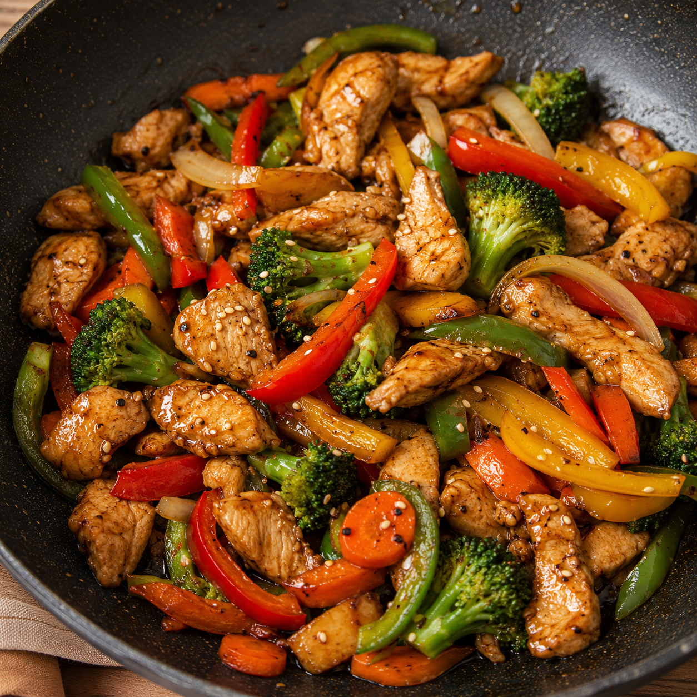

Chicken stir-fry

Go back to HOME
Description 📖
Chicken stir-fry is a quick, healthy, and flavorful dish that's perfect for busy weeknights. Tender strips of
chicken are cooked with colorful bell peppers and onions in a savory soy sauce-based glaze. It's light, packed with
protein and veggies, and comes together in under 15 minutes. Serve it over steamed rice or noodles for a complete
meal that tastes better than takeout! Enjoy🍗
Ingredients🛒
For the Chicken
- 500g boneless chicken (breast or thigh), cut into thin strips
- 1 tbsp ginger-garlic paste
- 1 tbsp soy sauce
- 1/2 tsp black pepper powder
- 1 tbsp cornflour (optional, for coating)
For the Stir-Fry
- 2 tbsp oil (vegetable or sesame)
- 1 large onion, sliced
- 1 bell pepper (red or green), sliced
- 1 carrot, julienned (optional)
- 2 tbsp soy sauce
- 1 tbsp oyster sauce (optional)
- 1/2 tsp sugar
- Salt to taste
For Garnich
- Spring onions, chopped
- Sesame seeds (optional)
Step By Step Process
Step 1: Marinate the Chicken
- In a bowl, combine chicken strips with ginger-garlic paste, 1 tbsp soy sauce, black pepper, and salt.
- (Optional) Add cornflour and mix well. This helps the chicken get a slight crispiness.
- Let it marinate for 10 minutes while you prep the veggies.
Step 2: Prep the Vegetables
- Slice the onion and bell pepper into thin strips.
- Julienne the carrot (cut into thin matchsticks) if using.
- Keep everything ready near the stove—this dish cooks fast!
Step 3: Cook the Chicken
- Heat oil in a large wok or frying pan over high heat.
- Add the marinated chicken in a single layer (don't overcrowd).
- Stir-fry for 5-7 minutes until the chicken is golden and cooked through.
- Remove the chicken from the pan and set aside.
Step 4: Stir-Fry the Vegetables
- In the same pan, add the sliced onion and bell pepper.
- Stir-fry on high heat for 2-3 minutes until slightly tender but still crunchy.
- Add the carrot (if using) and cook for 1 more minute.
Step 5: Combine and Sauce
- Return the cooked chicken to the pan.
- Add 2 tbsp soy sauce, oyster sauce (if using), sugar, and salt.
- Toss everything together for 2 minutes until well coated and heated through.
Step 6: Garnish and Serve
- Transfer to a serving plate.
- Garnish with chopped spring onions and sesame seeds.
- Serve hot with steamed rice or noodles.